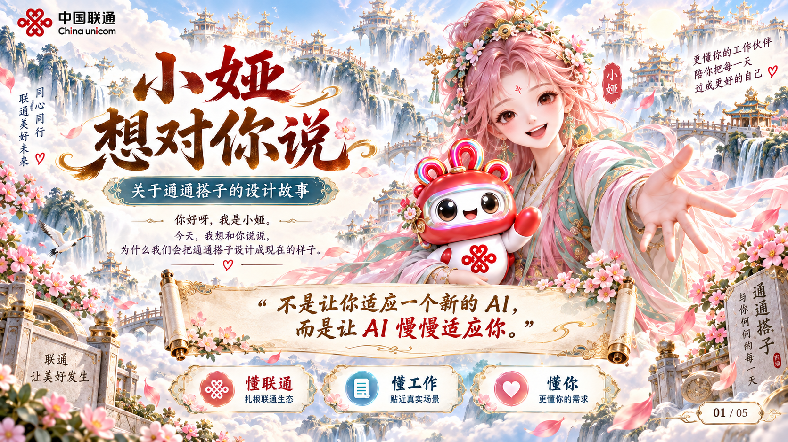
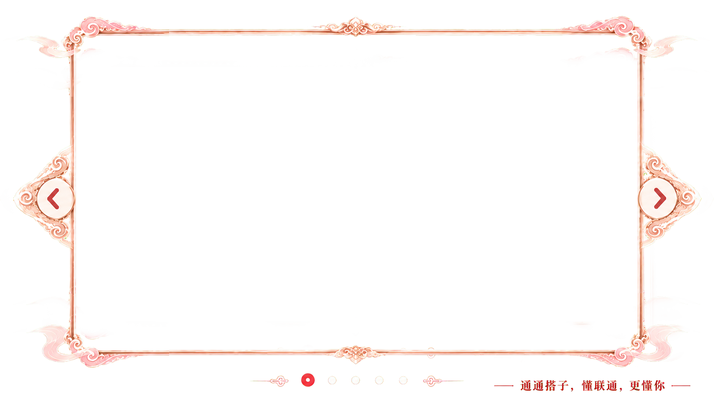
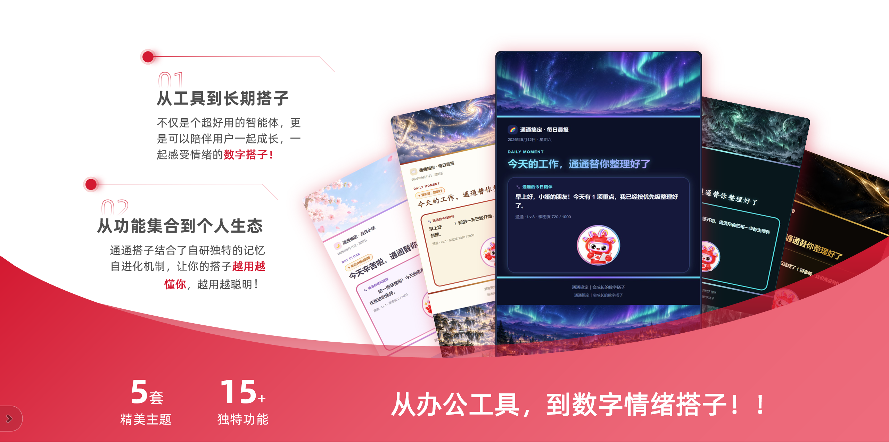

新对话说出这句口令，恢复本地状态、长期知识与小镇快照。
LONG-TERM COMPANION
不只陪你完成一次。
也陪你慢慢成为自己。
通通把一次对话里真正值得留下来的线索收好；下一次见面，也能从你正在关心的事情继续聊起。
只留高价值标题、摘要、来源、日期、链接和关键词。
你采纳一次提示、一起完成一件事，通通便更懂一点。
知识、花朵、能量、活跃与成就，慢慢汇成小镇的繁华。



AUTOMATIC RHYTHM
一天的节奏，通通替你安放好
从已授权的工作信息中筛选事实，自动沉淀，再在恰当时刻提醒你。
08:55百花听风开始收集
根据你的关键词检索公开资讯，筛选最多 5 条，写入晨间简讯与知识库。
关键词资讯DSAC 记忆
09:00通通每日晨报
读取邮件、OA、日历与待办，识别今日重点、风险和固定工作提醒。
18:00当日小结与陪伴
收好完成记录与明日事项。周五同时生成可阅读的 HTML 周报与六页汇报 PPT。
祈愿抽签小娅语音
周一 挂起工时任务周二 挂起流水线任务周三 领取水果任务周五 结算工时任务
WEEKLY STORY · HTML + PPT
把一周工作，做成值得分享的汇报
周五自动组织真实工作材料：先生成 HTML，再输出六页 PPT。看得清过程，也讲得好成果。
通通周报 2026.09.13

本周成果通通周报
工作回顾 · 成果沉淀 · 下周计划
客户体验工作闭环流程优化知识沉淀服务赋能
本周工作全貌真实材料生成
完成率趋势86%
周一周二周三周四周五
12已完成事项
4核心成果
3关键挑战闭环
S本周总体评价
BAIHUA TINGFENG GE
你的资料、偏好和关键词，
会慢慢长成知识的花园。
双阶段关注缓存机制会区分短期对话和长期价值：已授权的文件、偏好与项目结论被可靠沉淀，需要时再快速检索。
文件入库→关键词提取→每日资讯→晨间简报
套餐方案长期关注
用户体验工作结论
流程提效本周关键词
行业资讯晨间更新
⌕快速检索
TIME & WEATHER
工作会过去，成长会留下来
通通小镇只同步通通维护区，不覆盖你自己写下的故事。
⚡ 通通能量站
+16今日能量Lv.4 · 稳稳前进
346/ 400
再积累 54 点能量，就能抵达 Lv.5。
近 7 日能量连续签到 6 天
WEEKLY BLOOM
花苞初现 · 成长第 4/5 天
两个小线索已经出现，明天就会正式盛开。

 小娅正在为你鼓掌
小娅正在为你鼓掌通通默契度 1,860
Lv.2 · 每次真实功能调用都会多认识你一点。
MILESTONES
每一个坚持，
都有一枚小小勋章。
主题解锁、花园收获和每周陪伴，都会变成通通看见你的证明。
✦ 通通相伴✧ 流光映月✦ 沉金浮影✧ 幸运女神的回眸